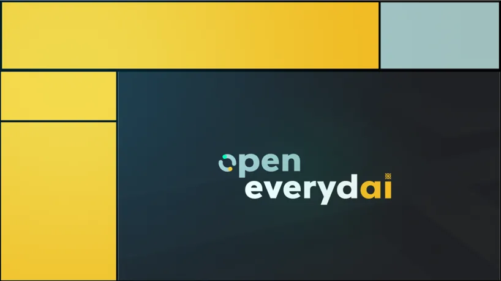
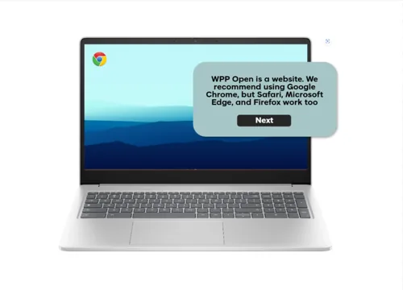
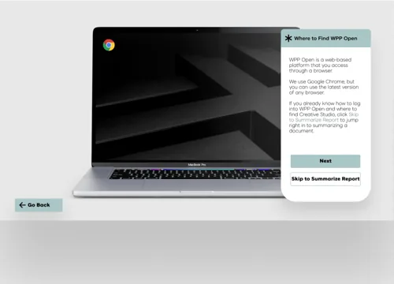
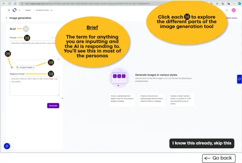
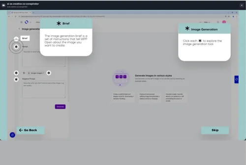
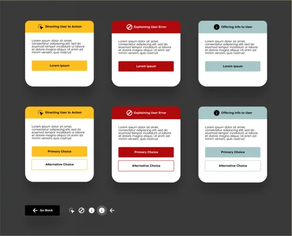
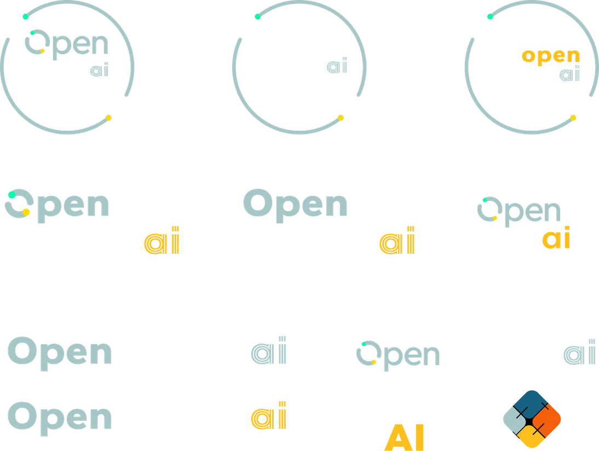
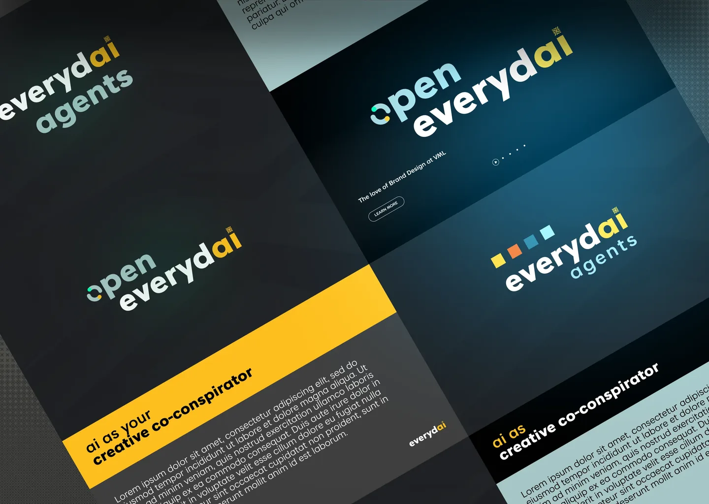
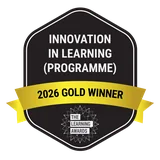
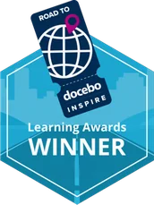

Marve AfoProduct designer
How a $3,000 Idea Beat a $300 Million Problem
T.L.D.R.
I redesigned the simulation as well as created the brand and launch campaign assets for Open Everydai, a training program that helped VML employees practice WPP's A.I. platform without fear. Built in 7 weeks for $3,000.
Won Several Awards
- 2 Brandon Hall Group Gold Awards
- Brandon Hall Group Silver Award
- LPI Gold for Innovation in Learning
- Docebo Inspire Award
Best Employee Development Program
Role
Sole product and visual designer
on a six-person learning team,
reporting to the VP, Global Head of Learning.
Key Stakeholders
- VP, Global Head of Learning
- Global Manager of Learning
& Development at VML

I created this sizzle reel in After Effects for our 2025 award submissions. Its figures cover the first 3 months after launch; the results below cover the first 10.
The Problem
The Fear of
Being Replaced
A Behavior Problem, Not a Features ProblemWPP invested $300M in WPP Open, its A.I. platform, and 40 clients worth $895M in annual revenue were already using it. Yet, only 6,056 of 30,000 VML employees were active users at launch (Jan 2025). Employees didn't fear the tool. They feared what it meant for their jobs. Slide decks and screen recordings couldn't fix that. People had to use the platform themselves, enough times that it stopped feeling foreign.
The TwistSecurity rules blocked practice inside the real platform. So we built a simulation that ran users through the simple everyday tasks that A.I. could help them with in WPP Open such as image generation, conversational coaching, drafting emails, or analyzing documents.
Before
Original Simulation Concept

After
Redesigned Simulation Theme



- The redesign featured information (i) icons that were later changed to asterisks which may be more globally recognizable as a flag for important info.
- A pulsing animation shows users where to click next.
- The back button moved left, where users expect it.
- The skip button was cut down to the essential word “skip.”
- Modals were redesigned with rounded rectangles to match WPP Open, with a dark overlay to focus attention.
Scaling
1 Course Became 5
Five courses needed the same polished interactions. Instead of a Figma prototype, I built the dialogue boxes, triggers, and navigation directly in Storyline as a reusable component library, plus a finished reference course. The Global Manager of L&D used it to build the other four, and the L&D team helped translate all five into 8 languages.

The Brand Had to Disarm the Fear
Generic A.I. imagery, with cybernetics and purple-blue crypto gradients, looked like the very threat people feared. We chose cool electric blue and yellow on dark backdrops instead, so Open Everydai reads as modern tech but stays approachable, not threatening.
The VP, Global Head of Learning also drafted a tiny, square, 4 panel symbol to represent the initiative.


From Feared to Everyday
Stats reflect the first 3 months after launch
335%
growth in WPP Open users, to 26,902
830%
growth in engaged sessions
#1
VML was the number 1 WPP Open user across the entire WPP network
Brandon Hall Group Gold Award | 2025Best Competencies and Skill Development
Brandon Hall Group Gold Award | 2025Best Custom Content
Brandon Hall Group Silver Award | 2026Best Unique or Innovative L&D Program

LPI Gold Award | 2026Innovation in Learning

Docebo Inspire Award | 2026Best Employee Development Program
Practice Before Pressure
Why It WorkedEvery micromethod ended with a button into the live platform, and employees used it more than 7,000 times in the first 3 months.
The simulation let employees rehearse the platform before using it for real, and VML went on to lead every WPP agency in adoption.
Design for the
Longest Language
If I Had a Second ChanceI'd test a few slides in all 8 languages before building the full courses. Seeing which languages ran longest would have let me plan spacing for text expansion up front, instead of fixing layouts one by one after translation.
I’d also spend a lot more time with a deep dive into brand to see what other ways I can visually represent friendly tech over scary A.I.